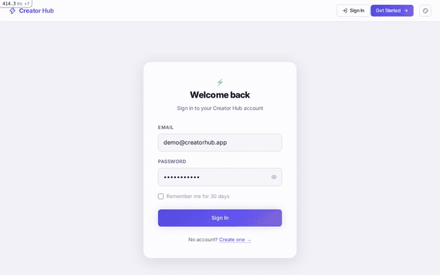

An AI-powered social media management platform — connect YouTube, Instagram, Twitter, LinkedIn, TikTok, and Facebook, then run everything from one dashboard: an AI content studio, a week-ahead Auto Pilot planner, and a growth playbook generator, all sitting on top of an adapter-pattern API.
How it works
Every platform — YouTube, Instagram, Twitter/X, LinkedIn, TikTok, Facebook — implements the same adapter interface (connect, publish, fetch stats). Everything built on top of it — the dashboard, the Content Studio, Auto Pilot, analytics — never branches on which platform it's talking to.
See it work
The GIF below clicks through the dashboard (5 connected platforms, 22 published posts), the AI Content Studio's Auto Pilot tab (generates a full week of posts across platforms for review and approval), and the analytics view.

Dashboard → Content Studio (Auto Pilot) → analytics
The Content Studio
| Video Studio | Upload a video/image, AI writes the caption and hashtags, post to any connected platform with a live phone-preview |
| AI Creator Flow | A guided multi-step content creation flow |
| Growth Coach | A personalised playbook — 5 tactics, posting cadence, engagement tips — from platform, niche, and follower count |
| Hashtag Lab | Hashtag research and optimisation |
| Auto Pilot | Generates a 7-day content calendar, one post per platform per day, for review and one-click approval |
Underneath it
The dashboard and Studio are themselves clients of the same JSON API — account-identifying details replaced with placeholders before publishing anything here.
GET /api/v1/analytics
{
"analytics": [
{ "platform": "instagram", "stats": null,
"error": "API error 400: OAuthException — session expired" },
{ "platform": "linkedin", "stats": { "followers": 340 }, "source": "live" },
{ "platform": "twitter", "stats": { "followers": 890 }, "source": "live" },
{ "platform": "youtube", "stats": { "views": 1542, "subscribers": 1204, "videos": 5 }, "source": "live" }
]
}
A real response, including a platform whose token had actually expired — handled per-platform, not a hypothetical error case
Engineering highlights
Each platform's stats fetch is rescued independently and reported as a per-item error field rather than the whole request 500ing because one of six platforms is unreachable — visible above with Instagram's expired token.
cp.stats_synced_at&.> 30.minutes.ago looks like it should work, but Ruby can't parse an operator method call through &. without explicit parentheses. Found while exercising this project for this portfolio — the analytics endpoint was a guaranteed 500 for every request. Fixed to a plain && check.
Generating a full week of posts across platforms and letting the user review/edit/reject each one before anything goes live means the AI-generated plan has to exist as real, editable records from the moment it's generated — not a preview string — so approval is just a status flip, not a second generation pass.
Sign-in returns the JWT in the Authorization response header (devise-jwt's default), not the JSON body — every client integration has to know to read it from there.
Tech stack
| Framework | Ruby on Rails 7.1 |
| Database | PostgreSQL 16 |
| Cache / jobs | Redis 7, Sidekiq 7 |
| Auth | Devise + JWT |
| AI | Content generation for captions, hashtags, growth playbooks, and Auto Pilot's week plan |